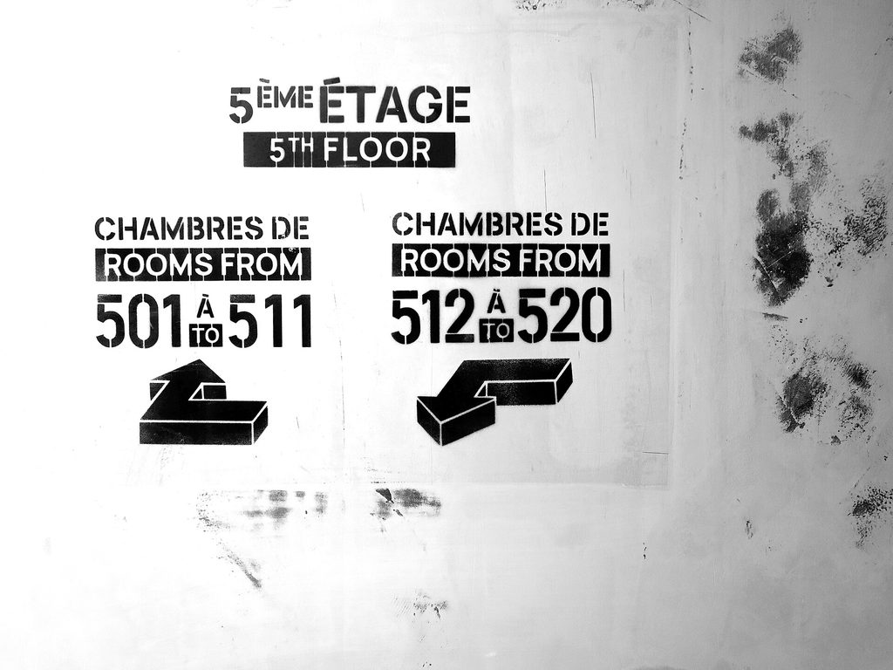

Questions fréquentes
Tout ce que l'on nous demande sur le fonctionnement du réseau, la sélection des professionnels, les délais et la couverture géographique.
Le service
Le service est-il vraiment gratuit ?
Oui, totalement et sans contrepartie cachée. Vous ne payez ni la mise en relation, ni les devis, et aucune commission n'est ajoutée au prix de l'entreprise retenue. Notre rémunération provient des professionnels du réseau, sous forme d'un abonnement fixe de six ou douze mois — indépendant du montant de votre chantier.
Suis-je engagé après avoir rempli le formulaire ?
Non. Vous pouvez refuser toutes les propositions reçues, sans justification et sans frais. Aucune exclusivité ne vous est demandée : vous restez libre de consulter d'autres entreprises en parallèle.
Combien de devis vais-je recevoir ?
Deux à trois en général, établis sur un cahier des charges identique. Nous préférons trois offres sérieuses à dix offres approximatives : au-delà, le tri devient un travail à part entière et les professionnels sérieux se désengagent.
En combien de temps ?
Nous vous rappelons sous 24 heures ouvrées pour préciser le besoin, puis les propositions arrivent sous 48 heures. Pour un projet complexe — signalétique d'un bâtiment entier, flotte de véhicules — comptez 3 à 5 jours.
Les professionnels
Qui réalise les travaux ?
Des entreprises indépendantes de votre région : enseignistes fabricants, imprimeurs grand format, poseurs habilités, graphistes, spécialistes du covering et de l'objet publicitaire. Nous vérifions leur SIRET, leurs assurances, leurs habilitations et leurs capacités de production avant tout référencement.
Comment sont-ils sélectionnés ?
Sur trois critères cumulatifs : la conformité administrative (SIRET actif, responsabilité civile professionnelle et décennale à jour), les capacités techniques réellement disponibles en interne, et le suivi des retours clients après chaque affaire apportée.
Puis-je choisir un professionnel en particulier ?
Oui, si vous en connaissez un dans le réseau, indiquez-le dans votre demande. À l'inverse, si vous souhaitez éviter une entreprise avec laquelle vous avez déjà travaillé, dites-le également : nous en tiendrons compte.
Que se passe-t-il en cas de litige ?
Le contrat vous lie directement à l'entreprise retenue : ce sont ses conditions et ses assurances qui s'appliquent. Nous intervenons néanmoins en médiation, et un professionnel dont les litiges se répètent est retiré du réseau.
Les projets
Traitez-vous les petits projets ?
Oui. Un lettrage de vitrine à 250 €, une plaque professionnelle ou cinquante stylos marqués sont traités comme le reste. Beaucoup de professionnels du réseau ont un seuil bas justement pour ce type de demande.
Et les projets multi-sites ?
C'est un cas fréquent : franchises, réseaux d'agences, entreprises multi-établissements. Nous construisons une charte technique reproductible et coordonnons des ateliers locaux pour un déploiement homogène, avec un planning par site.
Pouvez-vous m'aider si je ne sais pas ce que je veux ?
C'est même le cas le plus courant. Décrivez votre activité et votre façade, joignez une photo : nous vous proposons deux ou trois directions possibles avec leurs ordres de budget avant de lancer la moindre consultation.
Travaillez-vous avec les collectivités ?
Oui, sur la signalétique directionnelle, l'accessibilité PMR, la signalétique de bâtiments publics et le mobilier d'information. Nous orientons vers des entreprises habituées aux marchés publics et à leurs exigences documentaires.
Zone et couverture
Intervenez-vous dans ma ville ?
Le réseau couvre l'ensemble du territoire, métropole et outre-mer. Les pages « villes » correspondent aux agglomérations où il est déjà solidement implanté. Pour toute autre commune, nous sollicitons directement des professionnels du département concerné.
Le professionnel sera-t-il proche de chez moi ?
C'est un critère de sélection prioritaire. Un poseur situé à 30 km intervient plus vite, coûte moins cher en déplacement et rend le service après-vente réellement praticable — ce qui compte énormément pour une enseigne lumineuse.
Puis-je faire fabriquer loin et poser près ?
Oui, c'est un montage courant pour les pièces très spécifiques : fabrication dans un atelier spécialisé, pose par une équipe locale. Nous coordonnons les deux et veillons à la cohérence des responsabilités entre fabricant et poseur.
Vous avez un projet ?
Décrivez-le en 2 minutes. Nous le qualifions et le confions à des professionnels sélectionnés près de chez vous. Vous recevez des propositions comparables sous 48 heures. C'est gratuit et sans engagement.
Demander mon devis gratuitVous êtes professionnel ?
Enseigniste, agence de publicité, imprimeur, poseur, spécialiste du covering ou de l'objet publicitaire : rejoignez le réseau par abonnement 6 ou 12 mois, sans droit d'entrée et sans commission sur vos affaires.
Voir les formules